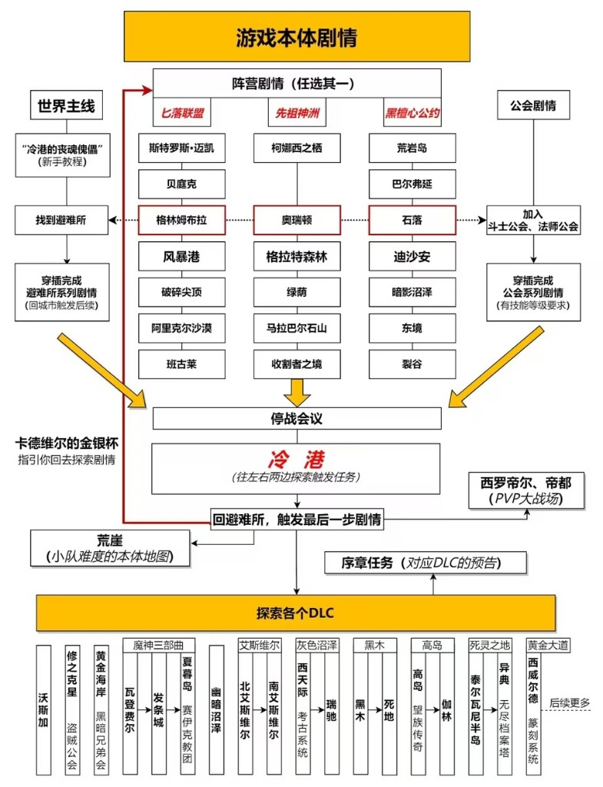
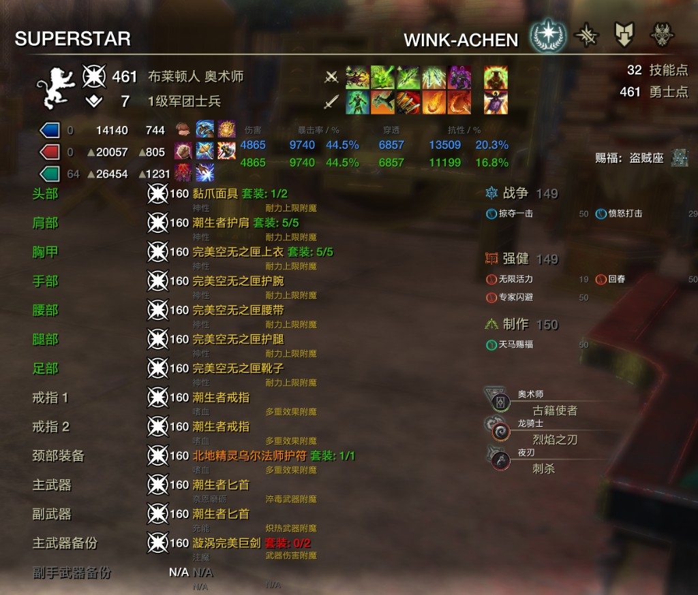
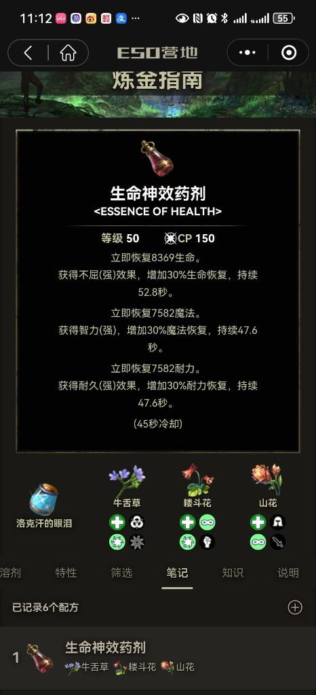
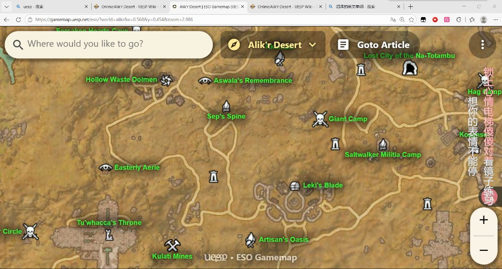

MEOWPRPR
坦克 / T- 头/肩天灾玛鲁贝斯（2/2）
- 胸/手/腰西罗帝尔饰章（5/5）
- 腿/足/戒指军营守卫者
- 颈链军营守卫者（套装 5/5）
- 武器军营守卫者匕首 + 盾
- 赐福淑女座
生命 46808耐力 15601抗性 21588
The Elder Scrolls Online · 个人攻略笔记
世界主线 · 三大阵营任选其一 · 公会剧情 · 最终 DLC 探索

跟随《"冷港的丧魂傀儡"》新手教程进入避难所，触发系列剧情后回到城市继续推进。
三阵营线汇合到"停战会议"，之后前往冷港探索，最终回避难所触发收尾剧情。
序章任务即各 DLC 预告。可按口味选择：魔神三部曲、艾斯维尔、灰色沼泽、黑木、高岛、死灵之地、黄金大道……
两位主力：肉盾死灵 & 双持奥术

截取的技能 & 符文图鉴一览

三合一回复药，副本 / PVP 常备

UESP Gamemap 截图（常用资源点位）

上线必做的三件事
勾选状态会保存在本地浏览器，第二天会自动重置（请手动取消，或刷新即可保留进度记忆）。
玩过才知道的小细节
前往 裂谷（Riften） 找对应 NPC 即可重置 / 修改副职业组合，无需注销角色重练。
世界主线 → 阵营线（任选） → 停战会议 → 冷港 → 序章 → DLC，不要乱跳，体验感会更连贯。
外站快速跳转